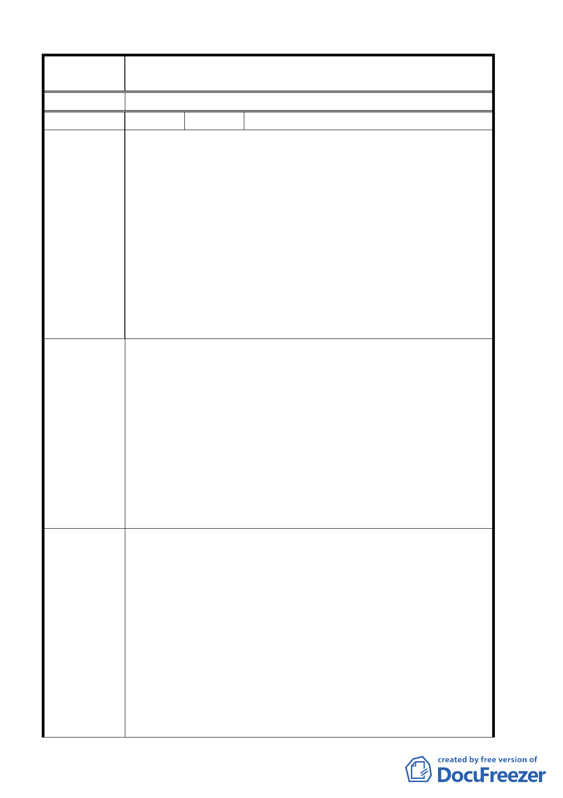

案 名 臺北市北投區都市計畫通盤檢討案（主要計畫）案
決議
編 號 ２ 陳情人 工務局
大度路、關渡路口之污水抽水站預定地（三‧O 二公頃），其用
途除作為關渡地區之污水系統揚水功能外，兼具就近服務北投
地區之污水下水道管線堵塞清理及未來關渡地區之污水收集輸
送功能。案經本局多次與發展局協調結果，本局基於配合市政
建設立場，同意留設 O‧八公頃作為抽水站用地；惟發展局表
陳 情 理 由 示因受限於學校用地面積之規定（不得小於二‧五公頃），故僅
能保留 O‧五公頃作為抽水站用地，本局表示其不足部份（O．
三公頃），同意比照公共設施用地多目標使用方式移設於該抽水
站用地鄰緊之地下，其上則充作學校綠地。經查本通盤檢討案，
發展局並未依本局建議的位置將該抽水站用地留設於緊鄰大度
路將影響未來污水管線之進岀抽水站。
一、北投中庸二號公園位於磺港溪現有河道左岸商業區部分，
因無防洪需求，且目前管理機關為本局公園處，故建議仍
維持原計畫（公園用地）使用。
二、磺港溪奇岩抽水站至西安橋下游段、北投市場前、中和橋
建議辦法
上游段等三處應屬綠地範圍，但以未按圖例劃設
三、中港河有局部河段仍標示為「行水區」，而未配合變更為「河
川區」。
四、百齡、大業、關渡、知行等四座抽水站未見標示用地位置。
五、建議於大度路關渡路口之污水抽水站仍需緊鄰大度路劃
設，俾利關渡地區之污水收集輸送功能
一、93.8.30 專案小組第七次審查會議：本案依細部部計畫政十
三同意變更公園用地、特定觀光商業專用區變更為水利設
施用地，有關提都市設計審議部分刪除，惟請養工處將細
部設計資料，先送發展局、公園處提供意見。
二、依北市工養字第 09263502800 號函發展局表示於細部計畫
專案小組審
查結論
中劃設。
三、依北市工養字第 09263502800 號函發展局表示將另案辦理。
四、依北市工養字第 09263502800 號函發展局表示於細部計畫
中劃設。
五、93.6.10 專案小組第五次審查會議：同意依工務局衛工處建
議位置將抽水站移至大度路邊，同時考量景觀因素，抽水
第 5 頁，共 49 頁